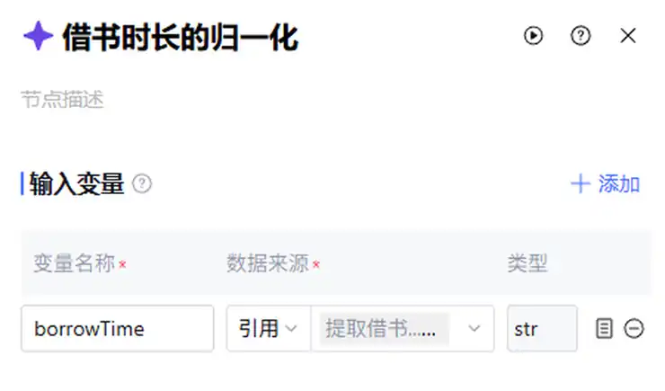
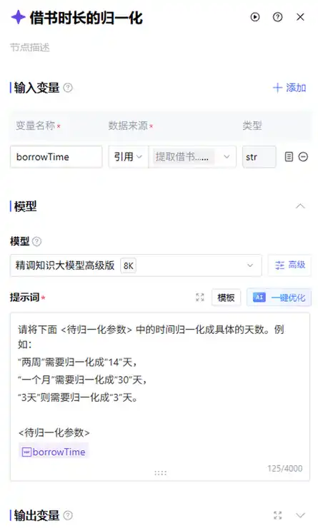
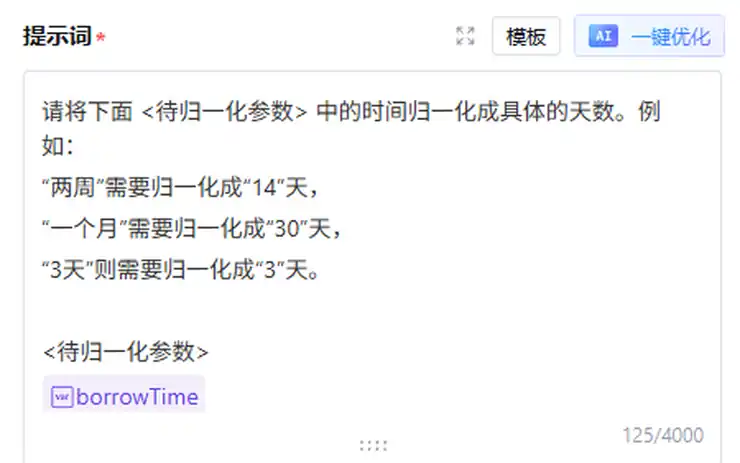
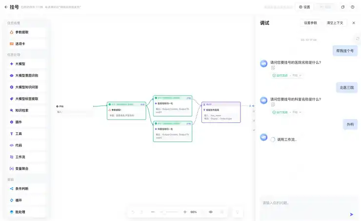

第六章｜AIGC应用与实践 · 第22次课 · 2 学时
多步骤协作与状态传递：让下一步拿到正确字段
00 知识回顾
上一课用一个模型节点生成介绍。本课把“提取事实”和“改写介绍”分开，让每一步只做一件事，并看清两步之间传了什么。
01 任务预告
本课成果： 一条两步AI协作流程：先整理商品事实，再据此生成介绍。能在调试里找到事实清单，也能解释最终文案来自哪个节点。
02 基础概念
1｜任务分工：按动作拆，不按名字拆
多步骤协作可以让不同节点分别提取、比较、改写。它不一定需要多个不同模型，关键是每一步的输入、规则和结果不同。给两个节点都写“请完成全部任务”不算有效分工。
例子： 第一个节点只整理商品状态，第二个节点只把事实变成自然介绍。它们可以使用同一款模型。
2｜中间结果：下一步真正需要的材料
中间结果不是最终作品，而是方便下一步处理的材料。本课用固定三行事实清单，避免第二个模型从一段长聊天里重新猜。
例子： 商品=音箱；状态=使用一年、声音正常；外观配件=边角磕碰、充电线。第二步只读这些事实。
3｜变量映射：选对来源字段
变量映射是把前一节点的某项输出接到当前输入。“整理.Content”是整理出来的事实文字，“整理.Thought”是思考过程；两者不能随便互换。
例子： 改写节点的facts引用“整理→Output→Content”，不是引用用户本轮问题。否则第二步会跳过整理结果。
4｜状态与内容：运行成功不等于内容正确
节点状态帮助定位成功、失败或等待；变量内容说明它实际收到和生成什么。看状态后还要定位内容，不能只因画布变绿就认为事实传对了。
03 核心案例
教师示范｜音箱事实清单接力到商品介绍
课堂模拟材料： 音箱用一年，播放正常，蓝色，边角有磕碰，配件充电线；没有电池续航测试。
操作①｜插入整理节点
在上一课工作流副本中，把原来的模型改名“整理”，新增一个大模型“改写”，连接开始→整理→改写→回复→结束。整理的material仍引用本轮对话。
只从商品材料提取事实，固定输出三行：商品、使用状态、外观与配件。没提供的项写未提供。保留缺点；不添加价格、续航或广告评价。
商品材料：
在末尾用“/”插入material变量。

输入变量的数据来源设置为引用，随后选上游节点；固定文字不会随新材料改变。
操作②｜让改写读取整理结果
在“改写”输入变量添加facts，来源选择“引用→整理→Output→Content”。复制规则，在末尾插入facts变量。回复节点answer改为引用“改写→Output→Content”。
依据事实清单写自然语气的闲置介绍，分“标题”和“正文”。只使用清单已有内容，保留外观缺点，不写新品承诺或续航判断。标题简短，正文一段即可。
事实清单：

数据来源选“引用”，再选择上游输出；提示词插入的是当前输入变量标签。

变量标签放在提示词需要读取材料的位置；本课改写节点在这里插入facts。
操作③｜沿输入输出看一次接力
发送音箱材料，依次点“整理”和“改写”的运行详情：先出现事实三行，再出现标题与正文。教学样例： “闲置蓝色音箱，播放正常；使用一年，边角有磕碰，附充电线，续航未测。”

调试区的一次回复对应画布上的运行路径；点击节点查看该次输入与输出。
若改写仍收到原始材料，改正facts来源；若回复仍显示三行事实，改正answer来源。两种错误发生在不同位置。
| 当前输入 | 应该取自哪里 |
|---|---|
| 整理.material | 用户本轮对话内容 |
| 改写.facts | 整理.Output.Content |
| 回复.answer | 改写.Output.Content |
04 实践任务｜让事实与语气各有分工
课堂底料： 运动背包：用了半年，拉链正常，左侧网袋有破口，附防雨罩。也可用自己的闲置物品材料。
操作①｜配置两步
复制或保留上一课流程副本，新增改写节点，按案例绑定三个输入。先让整理只生成事实三行，改写才负责自然介绍。
操作②｜改变语气而不改变事实
自己选“简洁直接”或“耐心说明”，只改改写节点的语气规则。试跑同一份材料，比较前后介绍；左侧网袋破口不能因为语气改变而消失。
操作③｜定位一条关键事实
在调试详情找到“网袋有破口”经过的两步：整理输出含它，改写输入也含它，最终介绍保留它。若丢失，只修对应节点。
成果：一条两步协作流程和最终介绍。 最后确认：每个模型职责不同；改写读的是事实清单；改变语气没有改变商品事实。
05 本课总结
拆节点是为了让动作和材料更清楚，不是节点越多越好。今天的关键是上一步Content成为下一步输入，回复读取最终改写结果。
下节预告： 用缺少信息、相互冲突和无关输入检查流程，学会让不合适的材料走另一条路径。